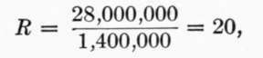
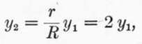
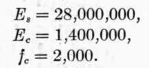
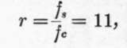

Art. 69. Concrete-Steel Beams With Single Reinforcement. Part 3
Description
This section is from the book "Cement And Concrete", by Louis Carlton Sabin. Also available from Amazon: Cement and Concrete.
Art. 69. Concrete-Steel Beams With Single Reinforcement. Part 3
Solving, we have yl = 6 inches nearly, and y2 = 10 — 6 = 4 inches.
From (4):
Substituting values of yl, y2, fc, Ec and Es, we have fs = 6,667 lbs. per sq. in.
From (5):
And az = 3.6 sq. in. of metal to each foot width of beam. This is more than double the amount of reinforcement required for a 13.25 inch beam, while the steel is stressed only 6,667 lbs. per square inch.
It may be asked why not use a smaller area of metal, say 2 sq. in., stressed to 12,000 lbs. per square inch, giving the same total tension; but a moment's consideration shows that in order that the metal should assume this higher stress, its elongation must increase proportionally, involving a corresponding increase of strain in the concrete in compression with an accompanying increase in stress beyond the assumed safe limit of 500 lbs. per sq. in.
591. To pursue this subject of excessive reinforcement a little further, let us examine some tests of concrete-steel beams made by Prof. Gaetano Lanza and reported in Trans. Am. Soc. C. E. for June, 1903.
In these beams the width z = 8 inches, h = 12 and d = 10 inches nearly. The span was 11 feet. Proportions in concrete by volume 1 part Portland cement, 3 parts sand, 4 parts broken trap that would pass 1 inch ring, and 2 parts of the same rock that would pass 1/2 inch ring. Both plain and twisted square steel bars were used as reinforcement, the plain bars having a tensile strength of about sixty thousand pounds per square inch and the twisted steel about eighty thousand pounds per square inch.
If we assume the ultimate strength of the concrete to be 2,000 pounds per square inch, the modulus of elasticity at this high stress to be 1,400,000 and the modulus of the steel to be 28,000,000, we have:
And for twisted bars:
From Eq. (4):
From Eq. (5)a = .
That is, .444 sq. in. of twisted steel reinforcement is required in the beam 8 inches wide in order that the stresses in concrete and steel shall simultaneously reach the values of 2,000 and 80,000 lbs. per square inch, respectively.
From (6):
= 311,100 inch-pounds.
One beam having .56 sq. in. reinforcement, or an area very close to the theoretical amount called for above, broke under a bending moment of 470,000 inch-lbs. Eight other beams having a greater area of reinforcement gave moments of 355,000 to 443,000 inch-lbs., and the average of the nine bars was 403,000, or 30 per cent, greater than the value derived by formula.
592. Included in the series of tests were three beams, in each of which were placed two 1 1/4 inch twisted rods. As we have seen, the correct amount of steel to develop the full strength of both steel and concrete is about .444 sq. in.; the three bars mentioned had 3.12 sq. inches of steel, or a large excess of reinforcement. To determine the theoretical moment of resistance of these beams, assume as before:
From (4):
From (5):
Solving (a), (6) and (c), we obtain:
Whence:
And from (6):
These three beams developed the following moments of resistance: 553,550, 663,700 and 783,500, mean 667,000 inch-lbs., or 28 per cent, greater than that derived by formula. None of them failed, however, by crushing of the concrete at the top of the beam, but by longitudinal shearing "at or a little above" the reinforcing rods.
593. It appears, then, that by increasing the area of steel reinforcement over 600 per cent., or from .44 sq. in. to 3.12 sq. ins., the strength of the beams was increased about 68 per cent, by theory, or 66 per cent, according to the few tests cited. The Cost of the beam, however, was increased about one hundred per cent.
This method of increasing the moment of resistance of a beam is not economical; it is better to improve the quality of the concrete. It may, however, be necessary at times to use excessive reinforcement on account of restrictions on the size of beam, but one may easily carry this so far that he passes outside the true theory of concrete-steel construction, and it becomes a question of the steel being sufficient to carry the entire load. In such cases double reinforcement may be adopted.
594. Tables Of Strength
In Table 160, equations (5) and (6) have been reduced to simpler forms by the introduction of values of Es and Selecting in the table the division corresponding to the modulus of elasticity of the concrete which is to be used, and the line opposite the assumed stress in the concrete, M0 = quantity in column a times the square of the depth of beam, d; and the area of steel in a beam of 12 inch width, i.e. 12 a, equals quantity in column b times the depth of beam, d. Column c gives the area of cross-section of steel expressed as the per cent, of the area of section above the center of steel reinforcement.
Table 160. Concrete-Steel Beams. Moment Of Resistance And Area Of Steel In Terms Of Depth Of Beam Or Slab
If d = depth, in inches, from top of beam to center of steel, Coefficient in column "a" multiplied by d^2 = moment in ft.-lbs. per foot width of beam (or inch-pounds per inch width of beam); Coefficient in column "b" multiplied by d = area steel in square inches per foot width of beam; Column "c" gives area steel expressed as per cent, of area cross-section of beam.
Continue to:
- prev: Art. 69. Concrete-Steel Beams With Single Reinforcement. Part 2
- Table of Contents
- next: Art. 69. Concrete-Steel Beams With Single Reinforcement. Part 4